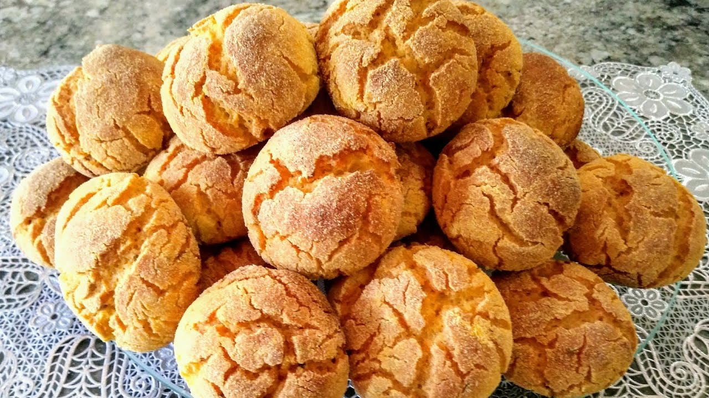

Doces · Tortas e bolos
Broinhas de fubá

Ingredientes
- 2 xícaras de açúcar
- 1 xícara de manteiga
- 5 gemas
- 1 garrafa pequena (200 ml) de leite de coco
- 1 xícara de leite
- 2 xícaras de fubá
- 1 xícara de farinha de trigo
- 1 colher (sopa) de fermento em pó
- 5 claras batidas em neve firme
Modo de preparo
- Forre 40 forminhas de empada (7 cm) com duas forminhas de papel cada.
- Pré-aqueça o forno a 180 °C. Bata açúcar e manteiga até esbranquiçar.
- Junte gemas uma a uma, alternando com leite de coco e leite.
- Acrescente fubá, farinha e fermento; misture com colher de pau.
- Incorpore as claras delicadamente. Distribua nas forminhas.
- Asse cerca de 35 min até dourar. Desenforme, esfrie e congele.
Observação
Congelamento: recipiente rígido com toalhas de papel entre camadas; descongele 1 h e reaqueça no forno.